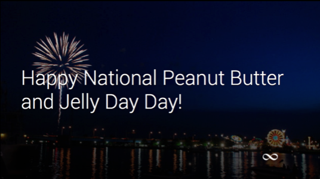

International Tuba Day! National Frozen Food Day ! Appreciate a Dragon Day!
There are so many holidays to keep track of, and this app helps you remember all of them. Everyday is a Google Glass application created by Diana Melara, that sends holiday notifications to users … every day! It was made with Java and it uses the Google Mirror API. To implement it, we created the main JSP servlets for users, prepared the database and a background service running to send the notifications.
Unlike a regular Google Glass application, you don't really install this app on the device, but rather login with your Gmail address on the website, and set the settings for how often you would like to receive the notifications. The idea is to know what special holiday we are celebrating every day! Pick the hour on which to send you the notification and the app will take care of the rest.
The notification comes in the form of a Glass card, and it will display the name of the holiday and even allow you to share on Twitter or Facebook so your friends also know the holiday that's being celebrated!
Even though Google Glass was discontinued, this app works with a back end web service architecture and it can also be used as a base to create a web site that runs with Java as backend utilizing maven and a war file that can be uploaded to websites like Google App Engine and Amazon Web Services to host a website.
Check out the code on Github today!